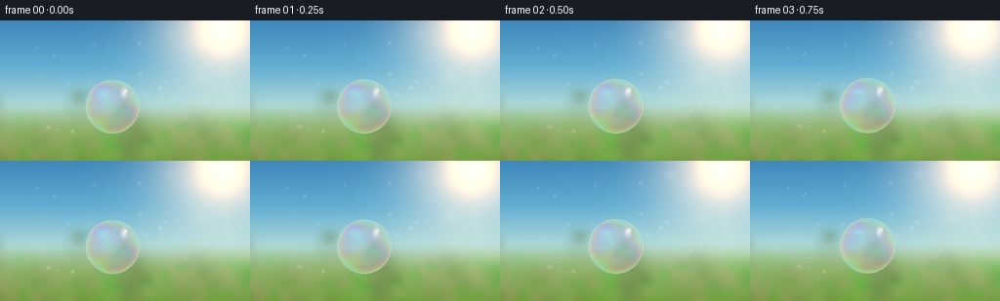
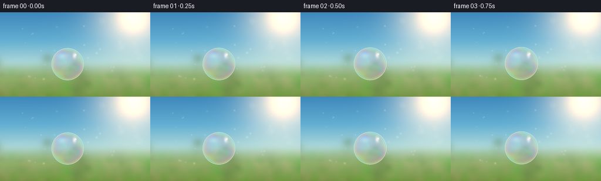
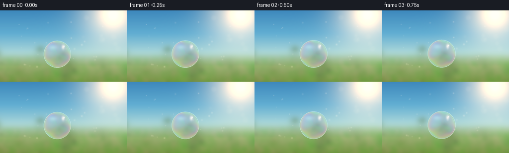
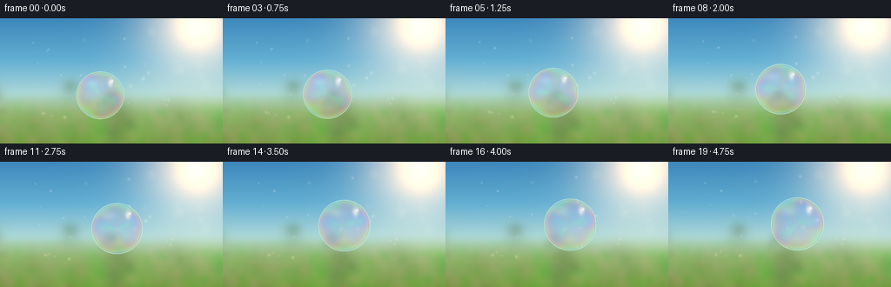
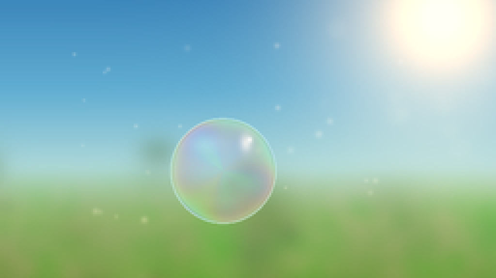
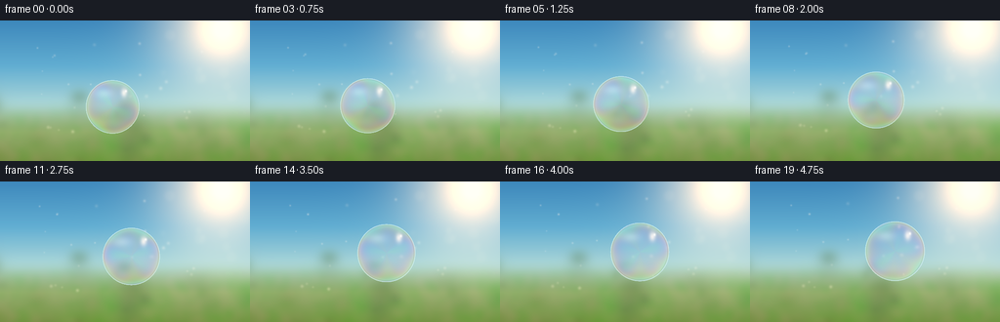
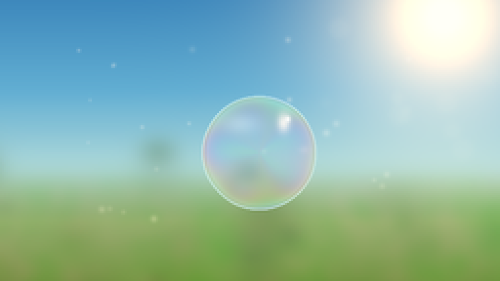
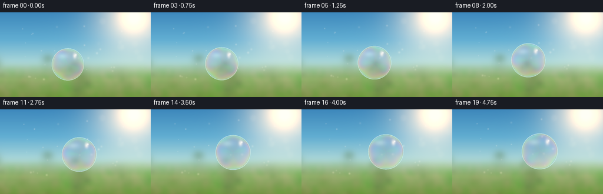

CODING AGENTS AS PIXEL WORLD MODELS
traex/DeepSeek-V4.1-Flash · phygen_082
点击播放 · 原生 RGB 像素
逐轮保存的候选
回放视频、检查图与代码变化。
每份候选均可单独播放。实际图片检查记录在下方工具轨迹中。
候选 01播放与检查图
点击播放 · 原生 RGB 像素


展开代码变化
--- 上一保存版本
+++ 本次保存版本
@@ -0,0 +1,287 @@
+from pathlib import Path
+
+import numpy as np
+from PIL import Image
+from scipy.ndimage import gaussian_filter, map_coordinates
+
+import artifact_io
+
+
+ROOT = Path(__file__).resolve().parent
+W, H, FPS, N = 256, 144, 4.0, 20
+SS = 2
+RW, RH = W * SS, H * SS
+BW, BH = RW + 48, RH + 32
+
+
+def smoothstep(edge0, edge1, value):
+ x = np.clip((value - edge0) / (edge1 - edge0), 0.0, 1.0)
+ return x * x * (3.0 - 2.0 * x)
+
+
+def screen(base, layer):
+ return 1.0 - (1.0 - np.clip(base, 0.0, 1.0)) * (
+ 1.0 - np.clip(layer, 0.0, 1.0)
+ )
+
+
+def make_background():
+ rng = np.random.default_rng(41)
+ yy, xx = np.mgrid[0:BH, 0:BW].astype(np.float32)
+ x = xx / BW
+ y = yy / BH
+
+ # Clear blue daylight fading into warm, hazy vegetation at the horizon.
+ stops = np.array([0.0, 0.34, 0.60, 0.76, 1.0])
+ colors = np.array(
+ [
+ [0.18, 0.47, 0.73],
+ [0.34, 0.65, 0.84],
+ [0.65, 0.83, 0.87],
+ [0.79, 0.85, 0.61],
+ [0.28, 0.43, 0.20],
+ ]
+ )
+ bg = np.empty((BH, BW, 3), dtype=np.float32)
+ for c in range(3):
+ bg[..., c] = np.interp(y, stops, colors[:, c])
+
+ # Soft, defocused foliage and meadow shapes.
+ fine = rng.normal(size=(BH, BW)).astype(np.float32)
+ broad = gaussian_filter(fine, sigma=19.0)
+ broad = (broad - broad.min()) / (broad.max() - broad.min())
+ mid = gaussian_filter(rng.normal(size=(BH, BW)).astype(np.float32), sigma=7.5)
+ mid = (mid - mid.min()) / (mid.max() - mid.min())
+ foliage_alpha = smoothstep(0.55, 0.78, y) * (0.32 + 0.38 * broad)
+ foliage = np.stack(
+ [
+ 0.15 + 0.24 * mid,
+ 0.31 + 0.34 * broad,
+ 0.10 + 0.18 * mid,
+ ],
+ axis=-1,
+ )
+ bg = bg * (1.0 - foliage_alpha[..., None]) + foliage * foliage_alpha[..., None]
+
+ # Blurred leaf clusters give the background depth without competing with the bubble.
+ for _ in range(34):
+ cx = rng.uniform(-0.05, 1.05) * BW
+ cy = rng.uniform(0.53, 1.08) * BH
+ rx = rng.uniform(13.0, 50.0)
+ ry = rx * rng.uniform(0.65, 1.25)
+ strength = rng.uniform(0.08, 0.24)
+ tone = np.array(
+ [rng.uniform(0.16, 0.32), rng.uniform(0.30, 0.50), rng.uniform(0.10, 0.24)]
+ )
+ d = ((xx - cx) / rx) ** 2 + ((yy - cy) / ry) ** 2
+ a = np.exp(-d * 2.4)[..., None] * strength
+ bg = bg * (1.0 - a) + tone * a
+
+ # Low golden haze where sunlight catches the distant meadow.
+ meadow = smoothstep(0.73, 1.0, y)
+ bg[..., 0] += meadow * 0.12
+ bg[..., 1] += meadow * 0.08
+ bg[..., 2] += meadow * 0.02
+
+ # Sun and its atmospheric bloom, positioned high on the right.
+ sun_x, sun_y = 0.855 * BW, 0.105 * BH
+ dist2 = (xx - sun_x) ** 2 + (yy - sun_y) ** 2
+ glow = 0.94 * np.exp(-dist2 / (2.0 * 92.0**2))
+ glow += 0.52 * np.exp(-dist2 / (2.0 * 31.0**2))
+ glow += 0.50 * np.exp(-dist2 / (2.0 * 11.0**2))
+ sun_color = np.array([1.0, 0.89, 0.64], dtype=np.float32)
+ bg = screen(bg, glow[..., None] * sun_color)
+
+ # A few warm out-of-focus highlights from leaves in the sunlight.
+ for _ in range(15):
+ cx = rng.uniform(0.55, 1.06) * BW
+ cy = rng.uniform(0.06, 0.56) * BH
+ radius = rng.uniform(4.5, 14.0)
+ d = np.sqrt((xx - cx) ** 2 + (yy - cy) ** 2)
+ disk = smoothstep(radius, radius * 0.58, d) * rng.uniform(0.035, 0.085)
+ color = np.array([1.0, rng.uniform(0.84, 0.96), rng.uniform(0.48, 0.72)])
+ bg = screen(bg, disk[..., None] * color)
+
+ # Gentle veiling glare and a warm/cool color balance.
+ bg = gaussian_filter(bg, sigma=(2.8, 2.8, 0.0))
+ bg *= np.array([1.025, 1.0, 0.94], dtype=np.float32)
+ bg += np.array([0.008, 0.012, 0.018], dtype=np.float32)
+ return np.clip(bg, 0.0, 1.0)
+
+
+def sample_background(bg, px, py, dx, dy, r2, t):
+ # Slight inversion and pinch make the film read as a curved transparent surface.
+ shift = 0.16 * r2
+ sx = px - dx * shift + 0.8 * np.sin(1.7 * t)
+ sy = py - dy * shift
+ result = np.empty((*px.shape, 3), dtype=np.float32)
+ for c, chroma in enumerate((-0.38, 0.0, 0.38)):
+ result[..., c] = map_coordinates(
+ bg[..., c],
+ [sy + chroma * r2, sx + chroma * r2],
+ order=1,
+ mode="reflect",
+ )
+ return result
+
+
+def add_motes(frame, t):
+ rng = np.random.default_rng(702)
+ count = 24
+ base_x = rng.uniform(0.12, 0.92, count)
+ base_y = rng.uniform(0.13, 0.80, count)
+ speed = rng.uniform(0.35, 1.0, count)
+ phase = rng.uniform(0.0, 2.0 * np.pi, count)
+ size = rng.uniform(0.45, 1.35, count)
+ bright = rng.uniform(0.12, 0.38, count)
+ yy, xx = np.mgrid[0:RH, 0:RW].astype(np.float32)
+ for i in range(count):
+ cx = (base_x[i] * RW + 4.0 * speed[i] * t) % RW
+ cy = (base_y[i] * RH - 2.6 * speed[i] * t + 1.8 * np.sin(t + phase[i])) % RH
+ sigma = size[i] * SS
+ d2 = (xx - cx) ** 2 + (yy - cy) ** 2
+ mote = np.exp(-d2 / (2.0 * sigma**2)) * bright[i]
+ warm = np.array([1.0, 0.89, 0.63], dtype=np.float32)
+ frame[:] = screen(frame, mote[..., None] * warm)
+
+
+def render_bubble(frame, bg, t):
+ yy, xx = np.mgrid[0:RH, 0:RW].astype(np.float32)
+ cx = (115.0 + 7.0 * t) * SS
+ cy = (88.0 - 3.65 * t + 2.05 * np.sin(1.35 * t + 0.15)) * SS
+ radius = (27.4 + 0.72 * t + 0.28 * np.sin(1.1 * t)) * SS
+
+ dx = xx - cx
+ dy = yy - cy
+ rho = np.sqrt(dx * dx + dy * dy) / radius
+ inside = rho < 1.0
+ r2 = np.minimum(rho * rho, 1.0)
+ z = np.sqrt(np.maximum(0.0, 1.0 - r2))
+ nx = dx / radius
+ ny = dy / radius
+ theta = np.arctan2(ny, nx)
+
+ # Refracted background, with only a whisper of distortion in the center.
+ refracted = sample_background(bg, xx, yy, dx, dy, r2, t)
+
+ # Moving thin-film interference: broad spectral bands plus small surface ripples.
+ phase = (
+ 2.55
+ + 5.85 * z
+ + 1.08 * np.sin(2.0 * theta + 0.58 * t)
+ + 0.62 * np.sin(5.0 * theta - 0.88 * t)
+ + 0.85 * rho**3
+ )
+ film = 0.52 + 0.48 * np.cos(
+ phase[..., None] + np.array([0.0, 2.04, 4.08], dtype=np.float32)
+ )
+ film = np.clip(0.16 + 0.84 * film, 0.0, 1.0)
+ film = 0.78 * film + 0.22 * np.array([0.87, 0.94, 1.0], dtype=np.float32)
+
+ fresnel = (1.0 - z) ** 2.6
+ film_alpha = 0.075 + 0.27 * fresnel + 0.13 * rho**2
+ interior = refracted * (0.965 + 0.035 * z[..., None])
+ interior = interior * (1.0 - film_alpha[..., None]) + film * film_alpha[..., None]
+
+ # A subtle reflected horizon separates sky above from meadow below.
+ horizon_ref = smoothstep(-0.35, 0.55, ny)
+ horizon_color = np.array([0.73, 0.82, 0.58], dtype=np.float32)
+ interior = interior * (1.0 - 0.045 * horizon_ref[..., None]) + (
+ horizon_color * 0.045 * horizon_ref[..., None]
+ )
+
+ # Fresnel edge light and a narrow colored contour.
+ rim = np.clip(fresnel * 1.18, 0.0, 1.0)
+ rim_color = np.array([0.86, 0.96, 1.0], dtype=np.float32)
+ interior = interior * (1.0 - 0.62 * rim[..., None]) + rim_color * (
+ 0.62 * rim[..., None]
+ )
+ edge = np.exp(-((rho - 0.958) / 0.022) ** 2)
+ interior *= 1.0 - 0.12 * edge[..., None] * np.array([0.62, 0.78, 1.0])
+ edge_light = np.exp(-((rho - 0.988) / 0.012) ** 2)
+ interior = screen(
+ interior,
+ edge_light[..., None] * np.array([0.22, 0.30, 0.36], dtype=np.float32),
+ )
+
+ # Broad sky reflection, a crisp solar glint, and a small secondary highlight.
+ broad = np.exp(
+ -(
+ ((nx + 0.31) / 0.34) ** 2
+ + ((ny + 0.51) / 0.18) ** 2
+ )
+ )
+ solar = np.exp(
+ -(
+ ((nx - 0.43) / 0.105) ** 2
+ + ((ny + 0.53) / 0.16) ** 2
+ )
+ )
+ glint = np.exp(
+ -(
+ ((nx - 0.50) / 0.042) ** 2
+ + ((ny + 0.59) / 0.050) ** 2
+ )
+ )
+ interior = screen(
+ interior,
+ broad[..., None] * 0.22 * np.array([0.80, 0.91, 1.0], dtype=np.float32),
+ )
+ interior = screen(
+ interior,
+ solar[..., None] * 0.72 * np.array([1.0, 0.93, 0.77], dtype=np.float32),
+ )
+ interior = screen(
+ interior,
+ glint[..., None] * 0.95 * np.array([1.0, 0.98, 0.91], dtype=np.float32),
+ )
+
+ # A faint reflected ground tone in the lower part of the sphere.
+ ground_ref = np.exp(-(((nx + 0.12) / 0.46) ** 2 + ((ny - 0.58) / 0.16) ** 2))
+ interior = screen(
+ interior,
+ ground_ref[..., None] * 0.10 * np.array([0.77, 0.89, 0.58], dtype=np.float32),
+ )
+
+ coverage = smoothstep(1.015, 0.985, rho)
+ blend = np.where(inside, coverage, 0.0)
+ frame[:] = frame * (1.0 - blend[..., None]) + interior * blend[..., None]
+ return frame
+
+
+def render():
+ bg = make_background()
+ frames = []
+ for i in range(N):
+ t = i / FPS
+ crop_x = 24 + int(round(1.6 * np.sin(0.31 * t)))
+ crop_y = 16 + int(round(1.0 * np.sin(0.43 * t + 0.4)))
+ frame = bg[crop_y : crop_y + RH, crop_x : crop_x + RW].copy()
+
+ # A slow exposure shimmer adds life without destabilizing the scene.
+ frame *= 1.0 + 0.006 * np.sin(0.8 * t + 0.2)
+ add_motes(frame, t)
+ frame = render_bubble(frame, frame, t)
+
+ # Fine highlight bloom and final display transform.
+ highlights = np.maximum(frame - 0.78, 0.0)
+ bloom = gaussian_filter(highlights, sigma=(2.2, 2.2, 0.0))
+ frame = screen(frame, bloom * 0.48)
+ frame = np.clip(frame, 0.0, 1.0)
+ frame = np.power(frame, 0.94)
+ frame8 = np.round(frame * 255.0).astype(np.uint8)
+ frame8 = np.asarray(
+ Image.fromarray(frame8).resize((W, H), Image.Resampling.LANCZOS)
+ )
+ frames.append(frame8)
+ return np.stack(frames)
+
+
+def main():
+ frames = render()
+ artifact_io.save(frames, ROOT)
+ print(f"saved {frames.shape} RGB frames to {ROOT}")
+
+
+if __name__ == "__main__":
+ main()
候选 02播放与检查图
点击播放 · 原生 RGB 像素


展开代码变化
--- 上一保存版本
+++ 本次保存版本
@@ -52,12 +52,12 @@
broad = (broad - broad.min()) / (broad.max() - broad.min())
mid = gaussian_filter(rng.normal(size=(BH, BW)).astype(np.float32), sigma=7.5)
mid = (mid - mid.min()) / (mid.max() - mid.min())
- foliage_alpha = smoothstep(0.55, 0.78, y) * (0.32 + 0.38 * broad)
+ foliage_alpha = smoothstep(0.54, 0.76, y) * (0.27 + 0.34 * broad)
foliage = np.stack(
[
- 0.15 + 0.24 * mid,
- 0.31 + 0.34 * broad,
- 0.10 + 0.18 * mid,
+ 0.12 + 0.20 * mid,
+ 0.25 + 0.31 * broad,
+ 0.08 + 0.15 * mid,
],
axis=-1,
)
@@ -69,9 +69,9 @@
cy = rng.uniform(0.53, 1.08) * BH
rx = rng.uniform(13.0, 50.0)
ry = rx * rng.uniform(0.65, 1.25)
- strength = rng.uniform(0.08, 0.24)
+ strength = rng.uniform(0.07, 0.21)
tone = np.array(
- [rng.uniform(0.16, 0.32), rng.uniform(0.30, 0.50), rng.uniform(0.10, 0.24)]
+ [rng.uniform(0.13, 0.29), rng.uniform(0.27, 0.47), rng.uniform(0.08, 0.20)]
)
d = ((xx - cx) / rx) ** 2 + ((yy - cy) / ry) ** 2
a = np.exp(-d * 2.4)[..., None] * strength
@@ -179,7 +179,8 @@
film = 0.78 * film + 0.22 * np.array([0.87, 0.94, 1.0], dtype=np.float32)
fresnel = (1.0 - z) ** 2.6
- film_alpha = 0.075 + 0.27 * fresnel + 0.13 * rho**2
+ film_alpha = 0.055 + 0.34 * fresnel + 0.14 * rho**2
+ film_alpha *= 0.88 + 0.12 * np.sin(3.0 * theta - 0.4 * t)
interior = refracted * (0.965 + 0.035 * z[..., None])
interior = interior * (1.0 - film_alpha[..., None]) + film * film_alpha[..., None]
@@ -191,18 +192,26 @@
)
# Fresnel edge light and a narrow colored contour.
- rim = np.clip(fresnel * 1.18, 0.0, 1.0)
+ rim = np.clip(fresnel * 1.28, 0.0, 1.0)
rim_color = np.array([0.86, 0.96, 1.0], dtype=np.float32)
- interior = interior * (1.0 - 0.62 * rim[..., None]) + rim_color * (
- 0.62 * rim[..., None]
+ interior = interior * (1.0 - 0.71 * rim[..., None]) + rim_color * (
+ 0.71 * rim[..., None]
)
edge = np.exp(-((rho - 0.958) / 0.022) ** 2)
interior *= 1.0 - 0.12 * edge[..., None] * np.array([0.62, 0.78, 1.0])
edge_light = np.exp(-((rho - 0.988) / 0.012) ** 2)
interior = screen(
interior,
- edge_light[..., None] * np.array([0.22, 0.30, 0.36], dtype=np.float32),
- )
+ edge_light[..., None] * np.array([0.32, 0.40, 0.46], dtype=np.float32),
+ )
+
+ # Colored caustic-like reflection curls along the lower half of the film.
+ lower_curl = np.exp(-((rho - 0.74) / 0.16) ** 2)
+ lower_curl *= smoothstep(-0.18, 0.84, ny) * (0.45 + 0.55 * np.sin(2.0 * theta - 0.7 * t) ** 2)
+ curl_color = 0.5 + 0.5 * np.cos(
+ phase[..., None] + np.array([1.0, 3.1, 5.2], dtype=np.float32)
+ )
+ interior = screen(interior, curl_color * (0.15 * lower_curl[..., None]))
# Broad sky reflection, a crisp solar glint, and a small secondary highlight.
broad = np.exp(
@@ -225,15 +234,15 @@
)
interior = screen(
interior,
- broad[..., None] * 0.22 * np.array([0.80, 0.91, 1.0], dtype=np.float32),
- )
- interior = screen(
- interior,
- solar[..., None] * 0.72 * np.array([1.0, 0.93, 0.77], dtype=np.float32),
- )
- interior = screen(
- interior,
- glint[..., None] * 0.95 * np.array([1.0, 0.98, 0.91], dtype=np.float32),
+ broad[..., None] * 0.35 * np.array([0.77, 0.89, 1.0], dtype=np.float32),
+ )
+ interior = screen(
+ interior,
+ solar[..., None] * 0.86 * np.array([1.0, 0.92, 0.75], dtype=np.float32),
+ )
+ interior = screen(
+ interior,
+ glint[..., None] * 1.0 * np.array([1.0, 0.98, 0.91], dtype=np.float32),
)
# A faint reflected ground tone in the lower part of the sphere.
候选 03播放与检查图
点击播放 · 原生 RGB 像素


展开代码变化
--- 上一保存版本
+++ 本次保存版本
@@ -179,7 +179,7 @@
film = 0.78 * film + 0.22 * np.array([0.87, 0.94, 1.0], dtype=np.float32)
fresnel = (1.0 - z) ** 2.6
- film_alpha = 0.055 + 0.34 * fresnel + 0.14 * rho**2
+ film_alpha = 0.038 + 0.38 * fresnel + 0.16 * rho**2
film_alpha *= 0.88 + 0.12 * np.sin(3.0 * theta - 0.4 * t)
interior = refracted * (0.965 + 0.035 * z[..., None])
interior = interior * (1.0 - film_alpha[..., None]) + film * film_alpha[..., None]
@@ -208,10 +208,10 @@
# Colored caustic-like reflection curls along the lower half of the film.
lower_curl = np.exp(-((rho - 0.74) / 0.16) ** 2)
lower_curl *= smoothstep(-0.18, 0.84, ny) * (0.45 + 0.55 * np.sin(2.0 * theta - 0.7 * t) ** 2)
- curl_color = 0.5 + 0.5 * np.cos(
- phase[..., None] + np.array([1.0, 3.1, 5.2], dtype=np.float32)
- )
- interior = screen(interior, curl_color * (0.15 * lower_curl[..., None]))
+ curl_color = 0.45 + 0.55 * np.cos(
+ phase[..., None] + np.array([0.7, 3.0, 5.4], dtype=np.float32)
+ )
+ interior = screen(interior, curl_color * (0.19 * lower_curl[..., None]))
# Broad sky reflection, a crisp solar glint, and a small secondary highlight.
broad = np.exp(
@@ -250,6 +250,15 @@
interior = screen(
interior,
ground_ref[..., None] * 0.10 * np.array([0.77, 0.89, 0.58], dtype=np.float32),
+ )
+
+ # A transparent center and brighter lower rim give the sphere its airy volume.
+ center_clear = np.exp(-(rho / 0.48) ** 2)
+ interior = interior * (1.0 - 0.08 * center_clear[..., None])
+ underside = smoothstep(0.45, 0.95, ny) * np.exp(-((rho - 0.82) / 0.15) ** 2)
+ interior = screen(
+ interior,
+ underside[..., None] * 0.11 * np.array([0.92, 0.98, 0.88], dtype=np.float32),
)
coverage = smoothstep(1.015, 0.985, rho)
可观测工具轨迹
实际执行的命令与返回图片。
命令 1exit 0
/bin/bash -c "pwd && rg --files -g '"'!**/.git/**'"'"
命令 2exit 0
/bin/bash -c "sed -n '1,240p' prompt.txt"
命令 3exit 0
/bin/bash -c "sed -n '1,260p' GENERATION_RULES.md"
命令 4exit 0
/bin/bash -c 'cat task_spec.json'
命令 5exit 0
/bin/bash -c "sed -n '1,260p' artifact_io.py"
命令 6exit 0
/bin/bash -c "sed -n '1,260p' player_template.html"
命令 7exit 0
/bin/bash -c "python - <<'PY' import importlib.util for m in ['numpy','PIL','imageio','cv2','matplotlib','scipy']: print(m, bool(importlib.util.find_spec(m))) PY"
命令 8exit 0
/bin/bash -c 'python generate.py'
命令 9exit 0
/bin/bash -c "python - <<'PY'
from PIL import Image
im=Image.open('frames/00.png')
im.resize((1024,576),Image.Resampling.NEAREST).save('.tmp/frame00_4x.png')
PY"命令 10exit 0
/bin/bash -c 'mkdir -p candidates/01 && cp inspection.png transition_check.png candidates/01/ && cp -r frames candidates/01/frames'
命令 11exit 0
/bin/bash -c "sed -n '1,360p' generate.py"
命令 12exit 0
/bin/bash -c 'python generate.py'
命令 13exit 0
/bin/bash -c "python - <<'PY'
from PIL import Image
for i in [0,10,19]:
im=Image.open(f'frames/{i:02d}.png')
im.resize((1024,576),Image.Resampling.NEAREST).save(f'.tmp/frame{i:02d}_4x.png')
PY"命令 14exit 0
/bin/bash -c 'mkdir -p candidates/02 && cp inspection.png transition_check.png candidates/02/ && cp -r frames candidates/02/frames && cp generate.py candidates/02/generate.py'
命令 15exit 0
/bin/bash -c 'python generate.py'
命令 16exit 0
/bin/bash -c 'mkdir -p candidates/03 && cp inspection.png transition_check.png candidates/03/ && cp -r frames candidates/03/frames && cp generate.py candidates/03/generate.py'
命令 17exit 0
/bin/bash -c "python - <<'PY'
from pathlib import Path
import json
import numpy as np
from PIL import Image
p=Path('.')
spec=json.loads((p/'task_spec.json').read_text())
z=np.load(p/'pixels.npz')['pixels']
print('pixels.npz', z.shape, z.dtype, 'expected', (spec['height'],spec['width'],spec['frames']))
files=sorted((p/'frames').glob('*.png'))
print('frame files', len(files), 'first/last', files[0].name, files[-1].name)
ims=[np.asarray(Image.open(f).convert('RGB')) for f in files]
a=np.stack(ims)
print('frame arrays', a.shape, a.dtype, 'range', int(a.min()), int(a.max()))
diffs=np.mean(np.abs(a[1:].astype(np.int16)-a[:-1].astype(np.int16)),axis=(1,2,3))
print('motion mean/min/max', float(diffs.mean()),float(diffs.min()),float(diffs.max()))
print('unique colors frame0',len(np.unique(a[0].reshape(-1,3),axis=0)))
print('artifacts',[(x.name,x.stat().st_size) for x in [p/'index.html',p/'pixels.npz',p/'inspection.png',p/'transition_check.png']])
PY"视觉工具实际返回图片 1

视觉工具实际返回图片 2
视觉工具实际返回图片 3

视觉工具实际返回图片 4

视觉工具实际返回图片 5

视觉工具实际返回图片 6

视觉工具实际返回图片 7
视觉工具实际返回图片 8
视觉工具实际返回图片 9

保存候选 3 份；完成命令 17 次；可验证图片返回 9 张。原始 API 响应与完整日志保留在本地。